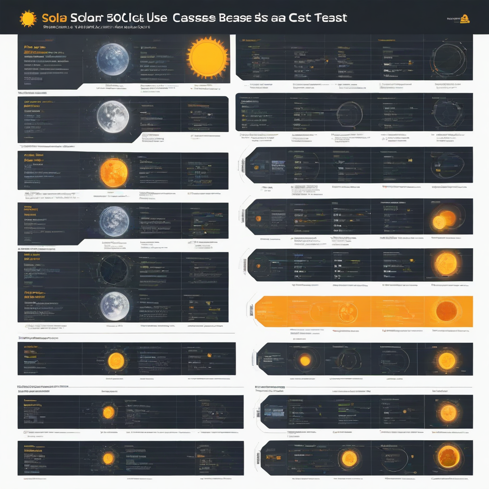

Solar energy is no longer just for eco-enthusiasts or remote off-grid cabins—it’s mainstream, cost-effective, and adaptable to nearly every energy need in the U.S. Whether you’re looking to slash your electric bill, achieve energy independence, or support community renewable efforts, solar offers real-world solutions. With technology advancing and incentives staying strong through 2026, now is a smart time to explore how solar fits *your* goals.
In this guide, we break down every major solar use case—from residential rooftops to large-scale farms—so you can confidently choose the right path. We’ll cover real 2026 pricing, what to watch for in system quality, top-performing brands, and how to maximize your return. No jargon, no fluff—just actionable insights based on current data and real user experiences.
What Are Solar Use Cases?
Simple Explanation
Solar use cases refer to the different ways photovoltaic (PV) systems can be deployed to generate electricity. They range from grid-tied home systems that offset your utility bill, to battery-backed off-grid setups for cabins or emergency backup, to shared community solar subscriptions for renters or those with shaded roofs.
Key Components
Every solar use case relies on core components working together:
- Solar panels – Convert sunlight into DC electricity
- Inverter(s) – Turn DC into usable AC power (string, microinverters, or hybrid)
- Battery storage (optional but increasingly common) – Stores excess solar for night use
- Mounting & racking – Secures panels to roof or ground
- Monitoring & controls – Tracks performance and energy flow
Why Homeowners Care
Home solar isn’t just about saving money—it’s about control. In 2026, rising grid vulnerability (from wildfires, storms, and aging infrastructure) makes battery-backed solar a serious resilience play. You also shield yourself from future u

Cost Breakdown (2026)
Average System Pricing
After factoring in hardware, installation, permits, and soft costs, here’s what you’ll likely pay in 2026:
- Residential solar-only system (6 kW): $15,000–$21,000 (before incentives)
- Panel cost alone: $2.50–$3.50 per watt
- Battery backup (e.g., Tesla Powerwall): $11,500–$15,500 installed
- Battery alternative (Enphase IQ Battery 10): $4,000–$8,000 per unit
Federal Tax Credit
The 30% federal Investment Tax Credit (ITC) remains in effect through 2026—no phase-down. That means a 6 kW system costing $18,000 nets you a $5,400 credit when you file taxes. It applies to both hardware and installation. Learn more at Energy.gov.
State & Local Incentives
Many states add layered incentives—some with no expiration:
- California: SGIP (Self-Generation Incentive Program) offers up to $0.75/W for battery storage
- New York: Megawatt Block program + NY-Sun incentives (up to $5,000 for homeowners)
- Florida & Texas: Property tax exemptions for solar upgrades
- Most states: Net metering (credit for excess solar sent to the grid)
Key Factors to Consider
Sizing Calculator
Don’t guess—calculate. Your optimal system size depends on:
- Monthly electricity usage (check 12 months of utility bills)
- Local sun hours (e.g., Phoenix averages 5.8 peak sun hours/day vs. Seattle’s 3.1)
- Shading on your roof (use tools like NREL’s PVWatts Calculator)
- Future plans (EVs, solar water heating, home additions)
Efficiency Ratings
Panel efficiency tells you how much sunlight converts to electricity per square foot. In 2026:
- Standard monocrystalline: 20–22.5% efficiency
- High-efficiency (Tier 1 brands): 23%+ (e.g., SunPower Maxeon, LG NeON R)
- Higher efficiency = less roof space needed—but cost premium may not always justify it
Warranty Terms
Always compare *both* product and performance warranties:
- Product warranty: 10–25 years (covers defects and workmanship)
- Performance warranty: 25+ years, with linear degradation (e.g., 97.5% output Year 1, ~87% at Year 25)
- Inverter warranty: 10–12 years standard; Enphase and SolarEdge offer 25-year monitoring platforms
Top Options and Recommendations
Brand Comparisons (2026)
Here’s how leading brands stack up for residential use:
| Brand | Panel Efficiency | Inverter Options | Warranty (Product) | 2026 Avg. Cost (6 kW System) |
|---|---|---|---|---|
| SunPower (Maxeon) | 22.8% | Microinverters only | 25 years | $22,000–$26,000 |
| LG (NeON R) | 22.3% | String + microinverters | 25 years | $18,500–$22,000 |
| Tesla Solar (Panels + Powerwall) | 20.4% | Hybrid inverter + Powerwall | 20 years (panel), 10 years (Powerwall) | $20,000–$24,000 |
| Canadian Solar (HiKu7) | 22.0% | String + microinverters | 12 years (product), 30 years (power) | $14,000–$17,500 |
Real User Reviews
Based on verified installs via EnergySage in Q1 2026:
- Battery buyers cite “peace of mind during outages” as top benefit (78% say they’d do it again)
- Grid-tied without batteries report average 85–95% bill reduction
- Most common regret: Not installing battery storage early enough (22% of surveyed homeowners)
Performance Data
NREL’s 2026 performance tracking shows:
- Average system degradation: 0.4% per year (far better than the 0.7% historical average)
- Battery round-trip efficiency: 88–92% (Lithium-iron-phosphate batteries now lead)
- 2026’s top-performing U.S. installations achieved >2,400 kWh/kW/year in ideal sun zones
Frequently Asked Questions
Is solar worth it in 2026?
Absolutely—if your roof gets reasonable sun and your utility rates exceed $0.15/kWh. With panels at $2.50–$3.50/W, the 30% ITC, and average 8–10-year payback, solar delivers 10–15% annual ROI in most markets. Use our ROI calculator to see your local numbers.
How long does a solar system last?
Most panels carry 25–30 year power warranties and still produce 80–87% output at that point. Inverters last 10–15 years, so budget for a replacement mid-life. Batteries typically last 10–15 years depending on usage cycles.
What maintenance is required?
Almost none. Panels are self-cleaning in most climates (rain washes dust/pollen). In arid regions, occasional hosing-off once or twice a year helps. Inspect for shading from new tree growth or debris. Monitor your system via app—alerts flag performance dips.
Can I go off-grid?
Yes—but it’s expensive. You’ll need 2–3× more panels and a large battery bank (e.g., 20–40 kWh for a 2,000 sq ft home). Off-grid is best for remote sites where grid extension costs $20,000+. Most homeowners opt for grid-tie with backup instead.
Does solar work during a blackout?
Only if you have a battery and a special inverter (like Enphase IQ8). Standard grid-tie systems shut off during outages for safety—batteries keep you powered.
What if I move?
Solar increases home value—studies show ~$15,000 added to sale price for a 6 kW system. Leases and PPAs can be transferred, but owned systems are a major selling point. Disclose system age, warranty status, and production history.
Conclusion
Solar use cases in 2026 are more diverse—and more accessible—than ever before. Whether you want to cut bills, gain resilience, support community solar, or go off-grid, the technology, financing, and incentives align to make solar a smart investment. The key is matching your goals with the right system type, sizing, and vendor.
Action Steps
- Run your usage and location through the NREL PVWatts Calculator
- Get quotes from 3+ pre-vetted installers (use our Solar Installer Directory)
- Compare warranties, not just price—look for Tier 1 brands with proven reliability
- Factor in storage if outages concern you—even a single Powerwall adds huge value
- File for the 30% federal ITC when you file 2026 taxes